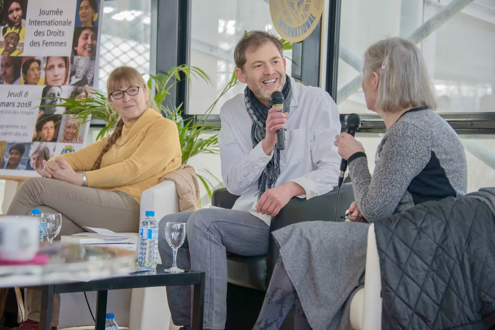
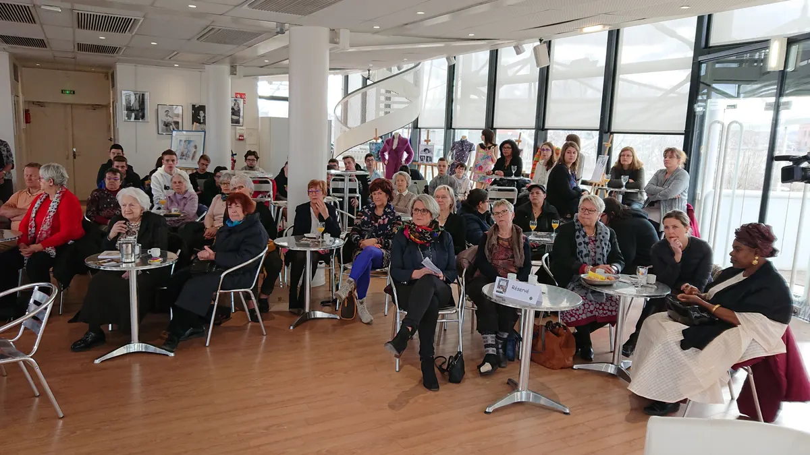
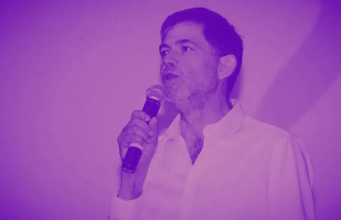

Depuis août 2016Strasbourg
Animateur d’événements
Journaliste de métier, j’anime et je modère tous types d’événements : conférences, débats, forums, tables rondes, manifestations sportives, cafés littéraires.

L’esprit d’une manifestation
Mettre en valeur ce qui fait l’événement
Chaque manifestation est dotée d’un esprit particulier, que celui qui est chargé de la présenter a pour principale mission de mettre en valeur. Pour y parvenir, le présentateur doit avoir la maîtrise du sujet et la confiance des intervenants, toutes deux acquises au moyen d’une préparation approfondie.
Il lui faut ensuite attiser l’intérêt du public en apportant sérieux, rigueur, pertinence, empathie et humour.
C’est ce supplément d’esprit qui fait de lui davantage qu’un présentateur : un animateur.
Méthode
Une méthode de journaliste
Préparer
Une préparation approfondie, pour maîtriser le sujet.
Gagner la confiance
Celle des intervenants, acquise elle aussi par la préparation.
Attiser l’intérêt
Celui du public, en apportant sérieux, rigueur, pertinence, empathie et humour.
Ce que j’apporte
- Sérieux
- Rigueur
- Pertinence
- Empathie
- Humour
Au micro, au plus près des invités



Six formats, un même esprit
Conférences
Débats
Forums
Tables rondes
Manifestations sportives
Cafés littéraires
un exemple d’événement animé pour chaque format